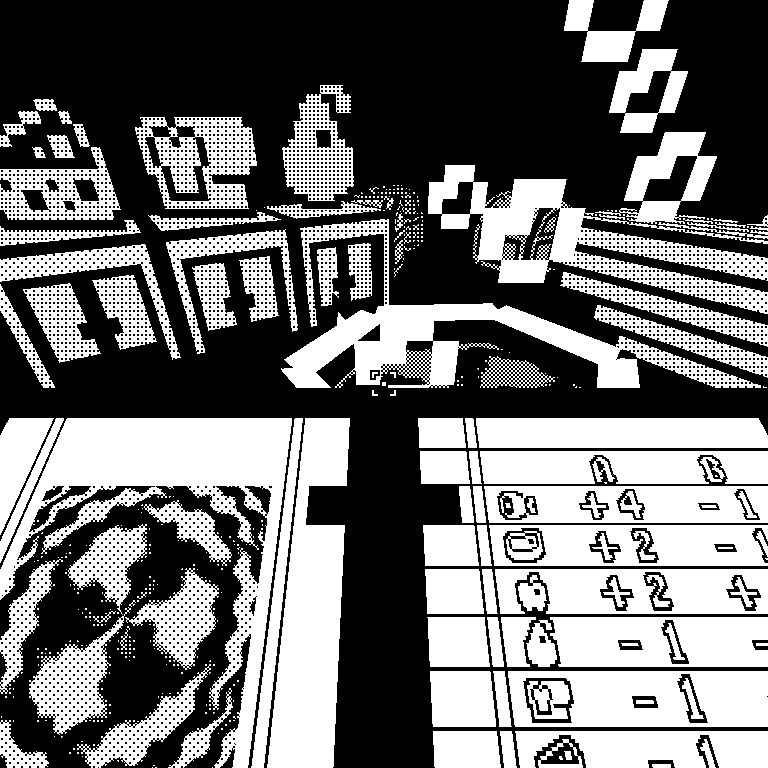
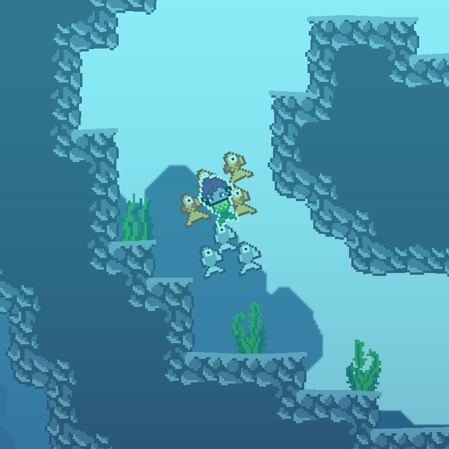
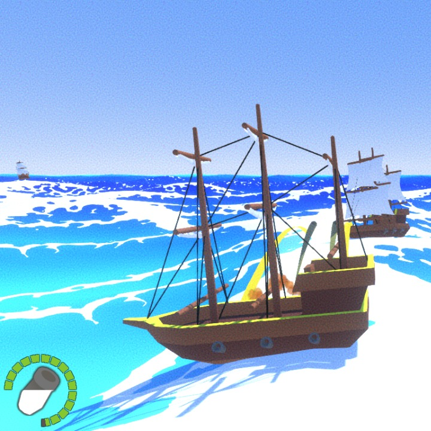
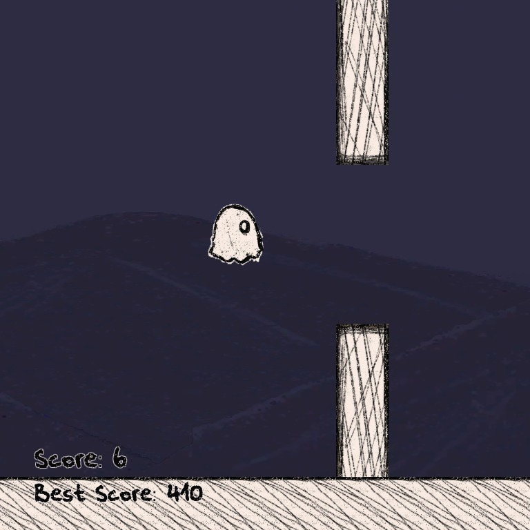
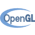
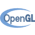

MAGIC SHAKE
Game Jam cujo objetivo era criar um jogo do zero em um fim de semana, com a restrição de que a arte deveria ser 1-Bit. Desenvolvido com a framework LibGDX em Java e OpenGL.
Clique aqui para acessar

SYRENE
Trabalho final da cadeira de Paradigmas de Programação. O jogador controla uma sereia que deve salvar seu lar da poluição. Desenvolvido com a framework LibGDX em Java e OpenGL.
Clique aqui para acessar

JOGO DO BARCO
Trabalho final da cadeira de Computação Gráfica Avançada. O jogador deve navegar um navio e derrotar a maior quantidade de navios inimigos. Desenvolvido na engine Unity em C#.

FANTASMINHA
Projeto feito para uma feira de ciências no ensino médio. O jogo é um clone de Flappy Bird que aprende a jogar sozinho usando Algoritmo Genético e um Perceptron. Desenvolvido na engine Unity em C#.
Linguagens


Gráfico
 
